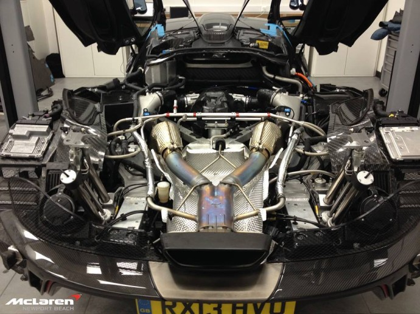

Review Bugatti Tourbillon


El McLaren P1 no és només un cotxe, és una obra mestra tecnològica que va marcar un abans i un després al món dels hipercotxes. Des de la seva presentació el 2013, aquest híbrid britànic ha destacat per combinar una enginyeria avançada amb un disseny que sembla extret d’un videojoc futurista. Limitat a només 375 unitats, el P1 és l’encarnació de la filosofia de McLaren: oferir el millor cotxe per a la pista, però totalment funcional a la carretera..
Motor i Rendiment: La Simbiosi de Gasolina i Electricitat
El cor del McLaren P1 és una combinació impressionant d’un motor V8 biturbo de 3.8 litres i un motor elèctric. Junts generen una potència combinada de 903 cavalls i 900 Nm de parell, permetent una acceleració de 0 a 100 km/h en només 2,8 segons. La velocitat màxima està limitada electrònicament a 350 km/h. Gràcies al sistema híbrid, el P1 també pot funcionar en mode 100% elèctric durant uns 10 km, ideal per a moure’s per zones urbanes amb zero emissions.
Interior: Minimalista però Enfocat al Rendiment
L’habitacle del McLaren P1 és un santuari per als amants de la conducció pura. Els seients esportius estan optimitzats per a oferir suport en corbes tancades, però sense sacrificar la comoditat en trajectes més llargs. El disseny és minimalista, amb un ús extensiu de fibra de carboni, mantenint el focus en el conductor. El quadre de comandaments digital ofereix informació clara i personalitzada, especialment quan es canvia al mode pista, on prioritza dades com la velocitat i les revolucions.
Exclusivitat i Preu
Amb només 375 unitats produïdes, el McLaren P1 és un dels cotxes més exclusius del món. El seu preu original rondava els 1,15 milions d’euros, però al mercat de segona mà els preus han augmentat considerablement, convertint-lo en una peça de col·lecció molt buscada.
Conclusió
El McLaren P1 és molt més que un cotxe híbrid; és una declaració de com la tecnologia pot elevar la conducció a un nivell completament nou. Amb un disseny espectacular, un rendiment híbrid revolucionari i una conducció enfocada a la pista, el P1 ha deixat una empremta indeleble a la història dels hipercotxes. Si el McLaren F1 va establir el llistó als anys 90, el P1 va ser l’encarregat d’elevar-lo al segle XXI.